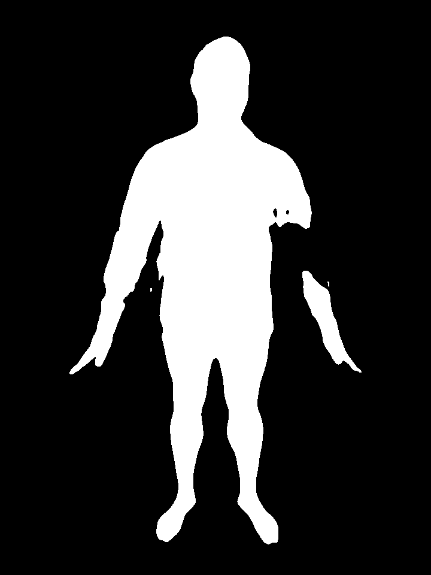
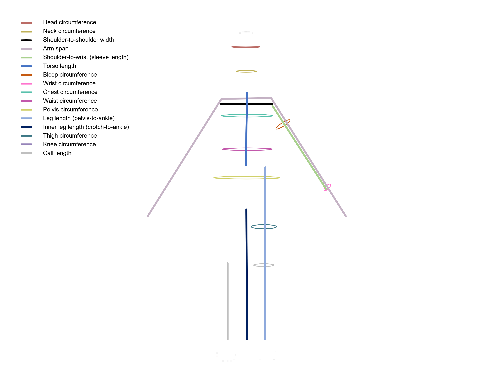

Comparing Synthetic and Real Data for Anthropometric Measurements Estimation
Michal Baránek
Mgr. Dana Škorvánková
Introduction
hello
Anthropometry
- Human body
Importance
- Fashion industry
- Motion capture
- Virtual reality


Traditional measuring methods are obsolete
Let's use neural networks instead
hello
Advantages
- Price
- Comfort
- Privacy
- Accessibility
- Accuracy
- Time
hello
Disadvantages
- Body deformations
- Misuse

AP Photo/Mark Schiefelbein
Goal
- Analyse domain gap
- Explore methods of data augmentation
Obstacles
Data availability
- Not enough ground truth data
- Costly to obtain
- Privacy
Data availability - Solution
- Use synthetic dataset
- Train network
- Adapt to perform on real data
Datasets
Surreact
- Synthetic dataset
- Generated using SMPL
- 16 + 1 measurements
- 79998 front + 79998 side images
- RGB images
- Different person each measurement

BodyM
- Measured on photogrammetry scans
- 14 + 2 measurements
- 8978 front + 8978 side images
- Binary silhouettes
- One person has around 3 images

BodyM Issues
- Unclear measurements
- Complicated structure
- Not enough data
- Invalid data


hi
hi
Incomplete Data


hi
Variable Pose

hi
Unidentifiable Data

Measurements
Measurements
Surreact
Measurements
BodyM

Measurements
Comparison
- Surreact
- head circumference
- neck circumference
- shoulder to shoulder
- arm span
- shoulder to wrist
- torso
- bicep circumference
- wrist circumference
- chest circumference
- waist circumference
- pelvis circumference
- leg length
- inner leg length
- thigh circumference
- knee circumference
- calf length
- BodyM
- ankle
- arm length
- bicep
- calf
- chest
- forearm
- hip
- leg length
- shoulder breath
- shoulder to crotch
- thigh
- waist
- wrist
Measurements
Comparison
- Surreact
- chest circumference
- waist circumference
- pelvis circumference
- bicep circumference
- thigh circumference
- shoulder to wrist
- leg length
- calf length
- wrist circumference
- shoulder to shoulder
- torso
- head circumference
- arm span
- knee circumference
- neck circumference
- inner leg length
- BodyM
- chest
- waist
- hip
- bicep
- thigh
- arm length
- leg length
- calf
- wrist
- shoulder breath
- ankle
- shoulder to crotch
- forearm
Network overview

Current work
hello
Prepared dataset
- Preprocessed images
- Fixed incorrectly saved data
- Created custom data loading

Started training
Training on pure Surreact
| Arm | Bicep | Calf | Chest | Leg | Pelvis | Shoulders | Thigh | Waist | Wrist | |
|---|---|---|---|---|---|---|---|---|---|---|
| Surreact - Error(CM) | 3.7 | 4.0 | 3.3 | 10.8 | 5.6 | 8.8 | 4.2 | 5.0 | 13.8 | 1.6 |
| BodyM - Error(CM) | 3.1 | 3.5 | 4.7 | 12.4 | 5.7 | 9.2 | 3.1 | 4.9 | 9.9 | 1.7 |
hello
Training on pure Surreact
Arm
Bicep
Calf

Chest
Leg
Pelvis
Future work
ASAP
- Fix neural network
- Compare performance on datasets
- Continue preparing network with frontal and lateral images
- Train network augmented with real data
Future work
More approaches
- Enhance data with height
- Combinations of mentioned approaches